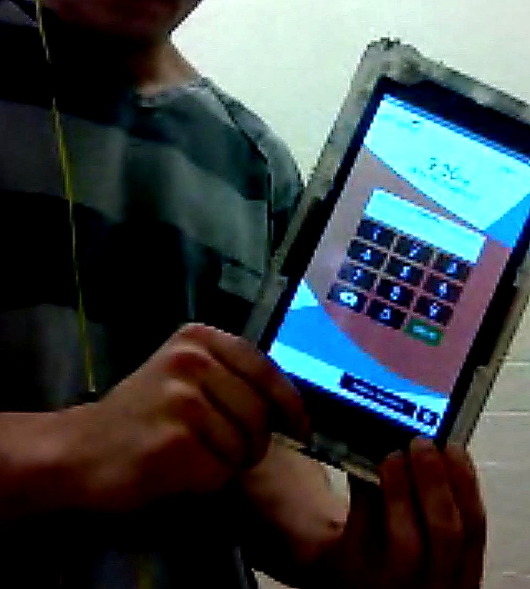

Wasted time becomes damage.
Confinement without structure does not stay neutral. It compounds stress, idleness, disorientation, and hopelessness.
Starting in Idaho. Built to change the minimum standard.
A Right For All is building the movement for a simple first demand: free GED prep and basic wellness on every correctional tablet.
The hardware is already there. The time is already being spent. The question is whether the free section helps a person build a future.

Founder-provided photo
This is the kind of device people are already holding inside. The hardware is no longer the excuse.
Free GED prep and basic wellness on every correctional tablet. Then build the larger intelligent workbook behind it.
Why this exists
A person can sit for months or years with a tablet in reach and still have no dependable path to free GED prep, daily mental reset, or future planning. That is not just inefficient. It is backwards.
Confinement without structure does not stay neutral. It compounds stress, idleness, disorientation, and hopelessness.
When distraction is easier to reach than learning, the system is choosing the wrong baseline for the people it will eventually send home.
People should not have to wait until release to begin repairing routines, building skills, and preparing for a different life.
Founder note: This started after time inside an Idaho jail where the tablet was real, the free section was thin, and the chance to better yourself was mostly missing. The movement is being built to change that minimum standard first — then keep going.
Voices from inside
These featured excerpts are paired with their original handwritten letters. Together, they make the emotional and practical case better than any slogan can.
The public demand
This movement does not need to begin with a giant promise. It begins with a standard that is morally obvious, technically plausible, and easy to repeat.
The first demand: every correctional tablet should include a free path to GED prep and basic wellness support.
The bigger vision
A Right For All is not just arguing for a better free section. It is building toward a smarter daily workbook for confinement, recovery, education, and reintegration.
Organize the public case, gather proof, clarify the minimum standard, and help systems stop treating learning and wellness as optional extras.
Create the guided layer that helps a person work on focus, stress, education, goals, treatment, and next steps — day by day, in order, with continuity.
How this becomes real
The work is to make the case clearly, prove the gap honestly, secure one credible path, and then turn proof into something durable.
Publish the case clearly, gather lived experience, and make the minimum standard hard to ignore.
Understand exactly what is free, what is paywalled, and what is missing across the systems we want to change.
Secure one credible path in Idaho that proves the baseline can be better and still remain practical.
Turn proof into partnerships, product direction, and long-term policy leverage.
Get involved
We are looking for founding supporters, educators, technologists, policy minds, correctional allies, designers, journalists, people with lived experience, and early funders who want to help make the minimum standard real.